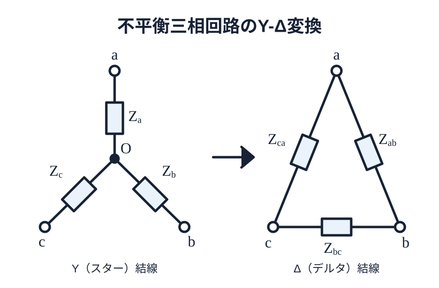

分野
表面・問題
○ 正解 0回
× 不正解 0回
Y結線の各相インピーダンスZa、Zb、ZcをΔ結線に等価変換したとき、Zabを求めよ。

タップして答えを表示
電験一種一次試験・理論
問題の追加・編集・削除・復元に対応。学習記録は問題IDごとに保持。Firebase認証でiPad・iPhone間の学習記録・メモ・問題の変更を同期。
Firebase設定を確認中…
問題データのクラウド同期を確認中…
両端末で同じメールアドレスとパスワードを使用します。パスワードをサイトに保存しません。
Firebase管理画面で取得したWebアプリの設定JSONを入力します。設定はブラウザ内に保存されます。全端末で使うには firebase-config.json をGitHubに公開してください。APIキーは公開前提の識別情報ですが、データへのアクセスはFirestoreセキュリティルールで制限します。
現在の出題条件に合う問題から選択できます。

タップして答えを表示
入力するたびに端末に保存します。ログイン中はクラウドにも自動同期します。メモは他の人には公開されません（最大2,000文字）。
メモは学習記録とは別管理です。JSONからの復元は現在のメモを上書きします。クラウドログイン中は他の端末にも反映されます。
クラウドログイン中はFirebaseと自動同期されます。ログイン前・オフライン時は端末に保存します。端末を変える前や記録の一括操作前に、JSONバックアップを取ってください。
ログイン中：このアカウントでの追加・編集・保管・削除はFirebaseでiPhone・iPad間に自動同期されます。未ログイン：端末内の下書きのみです。以前の端末下書きはログイン後に専用ボタンから移行してください。GitHubの公開問題そのものは変更しません。